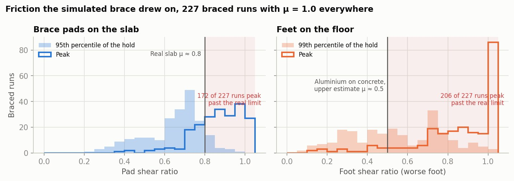
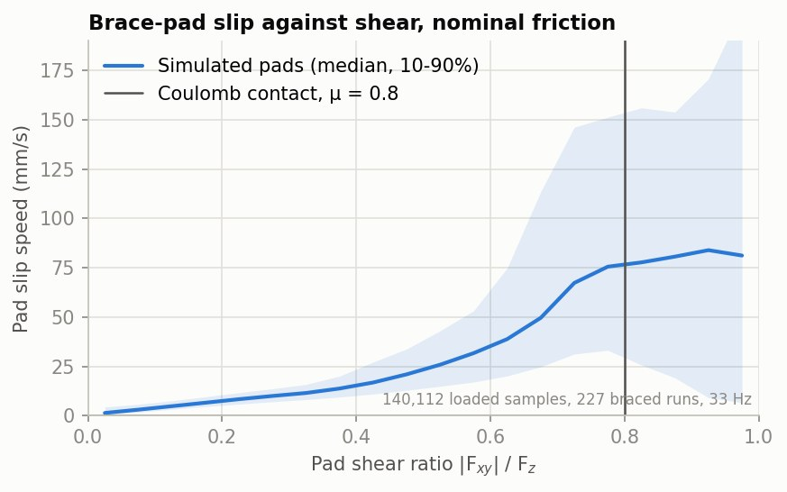
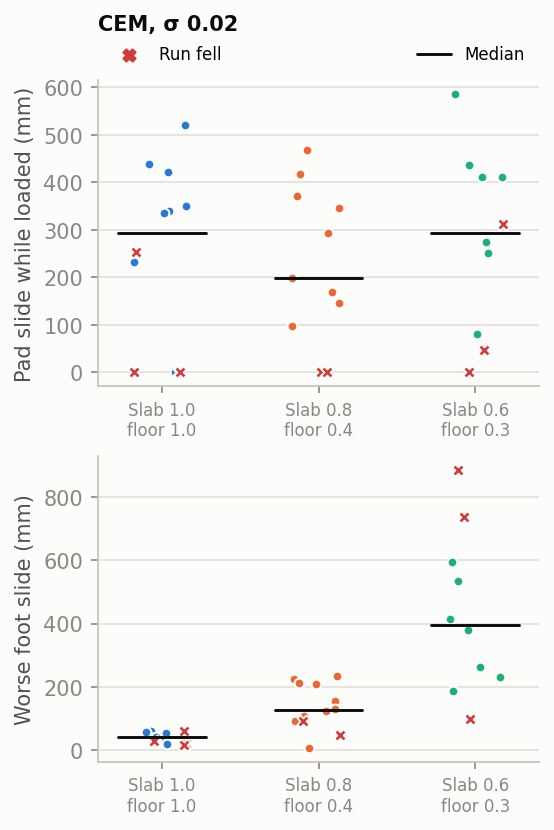
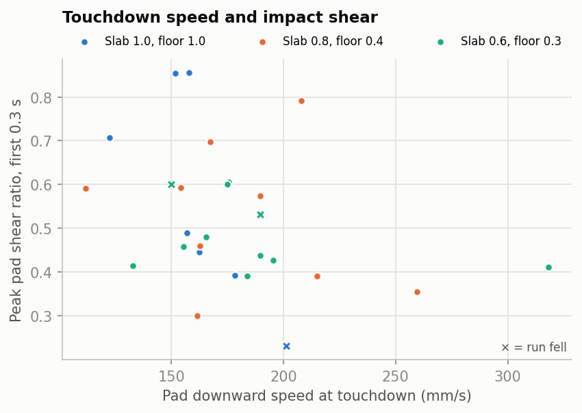
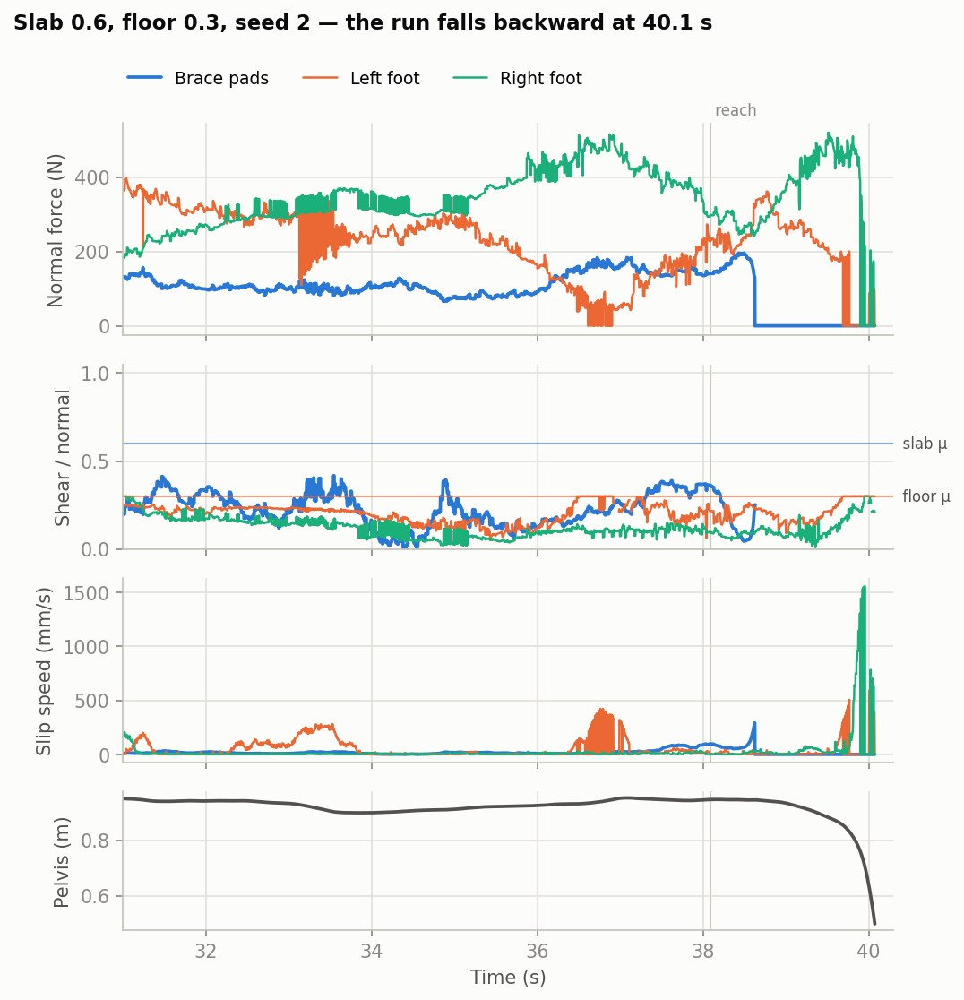

Arm–table and foot–floor friction in the braced lean
On the real H1-2 the braced lean slips at the arm, then at the feet, then collapses. In simulation it does not. Two reasons, both measured here: the friction robustness ladder this project already ran never lowered arm–table friction at all, and MuJoCo's contact lets a loaded brace pad creep continuously rather than hold and break away, so the plant has no event that corresponds to the arm letting go. 570 runs of the existing corpus re-scored for contact forces, plus new sweeps with friction set per surface.
The friction ladder never varied the brace
With --plant_friction_scale 0.4, the two surfaces that carry the brace stay at
μ = 1.0. The forearm pad and the wrist pad meet the slab through explicit
<pair> elements, and MuJoCo takes a declared pair's friction from
pair_friction; the flag scales geom_friction only. Everything else on the
slab — the gripper box, the jaw, the object — does drop to 0.4, and so do the feet.
| Contact | Route | μ at --plant_friction_scale 0.4 |
|---|---|---|
left_forearm_pad – slab | declared <pair> | 1.00 |
left_wrist_pad – slab | declared <pair> | 1.00 |
left_gripper_jaw_a – slab | geom, slab priority=1 | 0.40 |
left_gripper_collision – slab | geom, slab priority=1 | 0.40 |
| object – slab | geom, slab priority=1 | 0.40 |
| sole – floor | geom × geom | 0.40 |
So the μ ×0.6 and ×0.4 rows of the planner ablation (CEM 11/12 and 11/12,
studies/planner_ablation/HANDOFF.md §2j-result) are a foot-friction ladder with the
arm–table contact pinned at 1.0. The axis the hardware crossed was not on the grid.
--plant_table_mu and --plant_foot_mu set each surface directly, pairs
included, and echo what the contact set ends up using.
Friction the simulated brace draws on
Across the 227 braced runs of the ablation corpus, all at μ = 1.0 on both surfaces, the brace pads' peak shear ratio has median 0.89 and passes 0.8 in 172 of them; the worse foot's peak has median 0.91 and passes 0.5 in 206. The shear ratio |Fxy|/Fz is the friction coefficient that contact needs in order not to slide, so those runs are asking both surfaces for more than the real ones can supply — a slab at μ ≈ 0.8 and aluminium on smooth concrete somewhere near 0.3–0.5.
Sustained demand is lower than peak: the pads' 95th percentile over a hold has median 0.68 and exceeds 0.8 in only 29 runs, the feet's 99th percentile median 0.53. The excursions past the real limit are brief, which is consistent with the hardware failing at the moments of load transfer rather than through the whole hold.

The simulated contact creeps instead of sticking
A loaded brace pad slides the whole time it is loaded. Pooling 140,112 loaded samples, the median contact slip speed is 2.7 mm/s below a shear ratio of 0.1, 11 mm/s at 0.3, and 76 mm/s at 0.8. The pads are slipping faster than 2 mm/s for 95% of their loaded time, and in 87% of that the contact sits below its own friction cone — it is not sliding because it ran out of friction. Over one braced hold the pad's contact point travels a median 242 mm along the slab (10–90%: 92–530 mm), and the pad centre's path over the wood matches that to within about 10%, so it is the contact sliding, not the arm rolling.
The mechanism is the contact model. The brace pairs ship solref 0.02 with a soft
impedance onset (solimp 0.015 1 0.022) and the slab geom solref 0.08; friction
in MuJoCo is a regularised constraint, so tangential force is produced by tangential
displacement. A contact carrying half its friction limit therefore creeps at a steady rate rather than
holding still, and there is no breakaway: the curve below has no flat stick segment anywhere.

The consequence for this study is that lowering μ on the plant cannot, on its own, produce the
hardware failure: it moves the creep rate and the point at which the cone is reached, but there is
still no moment at which the brace releases. The arms that would change that are
cone="elliptic", noslip_iterations, and a stiffer contact; the first probe
is in the open questions below.
Friction set per surface
These runs set slab and floor friction on the plant directly and leave the planner's model at μ = 1.0, which is what the robot's planner believes. Strategy 25 on the deploy joint gains at 33 plans/s, CEM, 12 seeds per cell. They also log contact every 2 ms rather than once per plan, and reproduce the creep at that resolution, so the slide numbers above are not an artefact of sampling the ablation corpus at 33 Hz.
| Planner | Plant μ, slab / floor | Completed | Fell | Pad shear p95 | Pad slide (mm) | Foot slide (mm) | Sole moved (mm) |
|---|---|---|---|---|---|---|---|
| σ 0.02 | 1.0 / 1.0 (shipped) | 7/12 | 4 | 0.80 | 294 | 41 | 64 |
| σ 0.02 | 0.8 / 0.4 (measured estimate) | 9/12 | 2 | 0.58 | 199 | 127 | 84 |
| σ 0.02 | 0.6 / 0.3 | 7/11 | 3 | 0.45 | 293 | 397 | 241 |
| σ 0.01, slab +20 mm | 1.0 / 1.0 (shipped) | 5/9 | 4 | 0.76 | 0 | 17 | 45 |
| σ 0.01, slab +20 mm | 0.8 / 0.4 (measured estimate) | 7/9 | 2 | 0.60 | 107 | 74 | 57 |
Medians over the seeds that produced a contact record (12 per cell, less one μ 0.6/0.3 run the host's memory watchdog killed mid-run). Pad slide is the contact-point slip integrated over the time the pads carry more than 20 N; foot slide the same for the worse foot above 50 N; sole moved is how far the sole's material point ends up from where it stood when the lean rung began.
Completion is flat across the three cells while the sliding is not: 7, 9 and 7 runs finish the ladder, and the worse foot's slide over one run goes 41 → 127 → 397 mm as the floor coefficient drops. The pads' slide barely moves, because at a lower coefficient the pad reaches its cone sooner but was already creeping below it. A friction sweep scored on completion alone reports that this controller is insensitive to friction; scored on how far the feet travelled, it reports a tenfold change.

Two of the μ 0.6/0.3 falls do run the hardware's sequence: the loaded foot reaches its friction cone and skates, the brace unloads, and the robot goes over backwards, with the worse foot having slid 736 and 886 mm by the end. They are the only runs in this study that do.
Descent speed and the impact
With the slab where the planner expects it, the pad meets it at 112–318 mm/s downward in every one of the 36 runs, and the peak shear over the next 0.3 s runs 0.2–0.8. Raising the plant's slab 20 mm above the planner's model does not make that impact harder, which is the opposite of what this arm was built to test: 7 of 9 seeds per cell then graze the higher surface at 2–20 mm/s, during a slower part of the arm's swing, and settle onto it. The pads end up carrying less, not more — median pad slide 107 mm against 199 at the same friction, and no pad load at all at μ = 1.0, where 4 of 9 runs fall before the brace ever forms.
Descent speed in this task is set by the lean rung's 18 s posture ramp in
h12_brace_targeting.json, and the bench has no flag that shortens it. Getting a
genuinely faster approach means a copy of that strategy with a shorter
target_ramp_sec on rung 1, which is the next measurement rather than a result here.

One run, contact by contact

Reproducing this
Everything here is on branch wxie/brace-payload in mujoco_mpc, study
directory studies/brace_friction/.
cmake --build build_cmake --target lean_bench -j 6
# the sweeps (2 jobs x 6 threads through resguard.sh run; ~80 s per run)
studies/brace_friction/run_batches.sh
# score, figures, videos, page
studies/brace_friction/analyze.py runs/b1_sd02
studies/brace_friction/replay_ablation.py --dirs gains_spp15,mismatch_spp15_mu0.6,mismatch_spp15_mu0.4 \
--arms all --out runs/replay_ablation.jsonl --tracks runs/replay_tracks
studies/brace_friction/figs.py --out ../../docs/lean/media/brace_friction
MUJOCO_GL=egl studies/brace_friction/render.py --runs runs/b1_sd02 \
--tags t1_f1_s3,t0.6_f0.3_s3 --out ../../docs/lean/media/brace_friction/vid_mu_compare.mp4
studies/brace_friction/make_page.pyNew lean_bench flags: --plant_table_mu, --plant_foot_mu,
--planner_table_mu, --planner_foot_mu (sliding friction per surface, plant
and planner separately, pairs included); --plant_table_stiff 1 (slab contacts to
solref 0.01, solimp 0.95 0.99 0.001); --plant_table_dz (the
plant's slab offset from the planner's); --contact_out f.csv --contact_hz 500 (per-step
brace, foot and pad contact forces, friction-cone use, contact slip speed, pad and sole positions).
replay_ablation.py reconstructs the same channels from the 2026-09 ablation's state
tracks, which recorded state but not contact forces.
What this does not settle
- Both coefficients are estimates. Drag the forearm pad across the real slab under
a 50–150 N normal load with an inline force gauge and read the breakaway and sliding values; do
the same for a foot on the lab floor. The page assumes 0.8 for the slab (the user's estimate) and
0.3–0.5 for aluminium on concrete. Both feed
--plant_table_mu/--plant_foot_mudirectly. - The creep is not fixed by lowering μ.
--plant_table_stiffshortens the compliance length but leaves MuJoCo's friction regularised. The test: atsolref 0.01, does the pad's slide over a hold at shear ratio 0.3 fall below 20 mm? If it does not, the next lever iscone="elliptic"plusnoslip_iterations, which is a two-line change inLean_H12_Magpie.xmland a re-run of batch b1. - The planner is never told the friction.
--planner_table_mu/--planner_foot_muexist and are unswept. The measurement: batch b1 cells with the planner's model at 0.8/0.4 as well, asking whether a planner that knows the limit keeps the pad's shear below it, or whether the shear is set by the posture targets regardless. - Completion is the wrong score here. Runs complete with the soles hundreds of millimetres from where they started. Until a run is scored on sole displacement and pad slide as well as on reaching the last rung, a friction sweep will keep reporting that the controller is robust.
- Nothing here makes the robot come down faster. The bench's descent is the
lean rung's 18 s
target_ramp_sec, and--plant_table_dzturned out to soften the touch rather than sharpen it. The measurement: a copy ofh12_brace_targeting.jsonwith rung 1's ramp at 9 and 4.5 s, run at μ 0.8/0.4, asking whether impact shear crosses 0.8 and whether the pads then unload. Pair it with the hardware number — log the pad's vertical speed from the robot's state estimate through the lean rung and compare it with the 112–318 mm/s the bench shows. - No estimator noise and no actuator dynamics. The bench drives the plant from true state through an ideal joint PD. Both add phase lag at exactly the moment the brace lands.